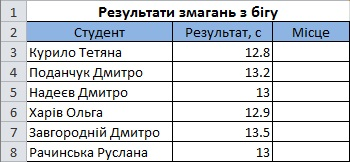

Вправа 7.2. Ранжування вибірки
У таблиці, наведеній на рис. 7.9, подано результати змагань групи студентів з бігу на 100 м. Потрібно ранжувати студентів за цими результатами, присвоївши номер 1 студенту з найкращим результатом, номер 2 – студенту з другим результатом і т. д. Також необхідно визначити, до яких результатів – високих чи низьких – тяжіє основна маса студентів.
- Відкрийте файл Bпpaвa_7_2.xlsx з архіву заготовок або самостійно створіть таку таблицю, як на рис. 7.9.

Рис. 7.9. Таблиця з вихідними даними - Для ранжування студентів скористайтеся функцією RANK, яку потрібно ввести у клітинку СЗ і скопіювати у діапазон С4:С42. Формула у клітинці СЗ має бути такою: =RANK(C3;C$3:C$42;1). Клітинка СЗ містить число, яке ранжується, С$3:С$42 – діапазон усіх результатів. Зверніть увагу, що номери стовпців у діапазоні результатів фіксовані, а посилання на клітинку, ранг якої обчислюється, відносне. Тому після копіювання цієї формули значення, ранг якого обчислюється, змінюватиметься, а весь діапазон значень залишатиметься тим самим. Місця студентів у змаганнях з бігу мають відобразитися у стовпці С.
- Щоб визначити, до яких значень – високих чи низьких – тяжіють результати основної маси студентів, варто обчислити асиметрію вибірки. Отже, уведіть у будь-яку клітинку поза межами таблиці формулу =SKEW(C3:C42), і буде обчислено асиметрію розподілу результатів змагань з бігу. Вона дорівнює приблизно -0,64. Це означає, що високих результатів (маленький час) набагато менше, ніж низьких. Знайдіть найкращий результат (це студент з рангом 1), він дорівнює 11,2 с. Зменште його до 10 с, і асиметрія стане ще меншою, оскільки найкращий результат став ще рідкіснішим.